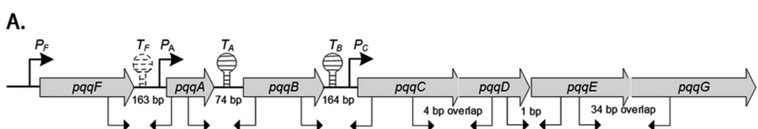

pqqA (PP_0380) encodes the 23-residue ribosomally synthesized precursor peptide for pyrroloquinoline quinone (PQQ) biosynthesis in Pseudomonas putida KT2440. PqqA is not an enzyme; it is the biosynthetic substrate of the pathway. Its conserved glutamate (Glu15) and tyrosine (Tyr19) residues are recognized by the radical-SAM enzyme PqqE (presented via the PqqD chaperone), cross-linked via a C-C bond, and the modified core is then excised (PqqF/PqqG) and oxidatively matured (PqqB hydroxylase, PqqC oxidase) into the PQQ cofactor. The peptide is synthesized and matured in the cytosol, whereas the mature PQQ cofactor is deployed mainly by periplasmic quinoproteins (e.g., PQQ-dependent glucose dehydrogenase). In KT2440 the pqq locus is organized as pqqFABCDEG with suboperonic transcription, and PQQ output is responsive to phosphate availability, linking pqqA to rhizosphere mineral-phosphate solubilization. The appropriate review focus is PQQ biosynthesis as a pathway precursor peptide rather than an independent catalytic activity.
| GO Term | Evidence | Action | Reason |
|---|---|---|---|
|
GO:0018189
pyrroloquinoline quinone biosynthetic process
|
IEA
GO_REF:0000120 |
ACCEPT |
Summary: This is the correct biological-process annotation for PqqA. UniProt identifies PqqA as required for PQQ biosynthesis and describes the peptide as the source of the cross-linked Glu-Tyr precursor used to form PQQ. The falcon deep-research synthesis confirms that PqqA is the ribosomally synthesized precursor peptide whose conserved Glu/Tyr residues become the PQQ scaffold, and that it is not a catalytic enzyme but the biosynthetic substrate of the pathway. The GO term definition itself states PQQ is synthesized from a small peptide containing tyrosine and glutamic acid that are cross-linked, matching PqqA exactly.
Reason: PqqA is not a standalone enzyme, but it is a pathway precursor peptide required for pyrroloquinoline quinone biosynthesis; the BP annotation is the most appropriate representation of its core role.
Supporting Evidence:
file:PSEPK/pqqA/pqqA-uniprot.txt
Required for coenzyme pyrroloquinoline quinone (PQQ)
file:PSEPK/pqqA/pqqA-uniprot.txt
Pyrroloquinoline quinone (Glu-Tyr)
file:PSEPK/pqqA/pqqA-goa.tsv
pyrroloquinoline quinone biosynthetic process
file:PSEPK/pqqA/pqqA-deep-research-falcon.md
pqqA is explicitly identified as PP_0380 and as the peptide precursor for PQQ biosynthesis
file:PSEPK/pqqA/pqqA-deep-research-falcon.md
It is the **substrate/precursor peptide** from which PQQ is biosynthesized. The conserved **glutamate (E)** and **tyrosine (Y)** in the PqqA “core” provide the atoms that become cross-linked and transformed into the PQQ scaffold.
|
Q: Which PqqA residues and processing intermediates can be detected directly in P. putida KT2440 during PQQ biosynthesis?
Experiment: Delete pqqA and complement with wild-type and Glu/Tyr substitution variants, then quantify cellular or secreted PQQ and activity of PQQ-dependent dehydrogenases.
Hypothesis: PqqA supplies the Glu-Tyr precursor required for PQQ production in KT2440.
Type: targeted genetics and metabolite analysis
The research report should be a detailed narrative explaining the function, biological processes, and localization of the gene product. Citations should be given for all claims.
You should prioritize authoritative reviews and primary scientific literature when conducting research. You can supplement
this with annotations you find in gene/protein databases, but these can be outdated or inaccurate.
We are specifically interested in the primary function of the gene - for enzymes, what reaction is catalyzed, and what is the substrate specificity? For transporters, what is the substrate? For structural proteins or adapters, what is the broader structural role? For signaling molecules, what is the role in the pathway.
We are interested in where in or outside the cell the gene product carries out its function.
We are also interested in the signaling or biochemical pathways in which the gene functions. We are less interested in broad pleiotropic effects, except where these elucidate the precise role.
Include evidence where possible. We are interested in both experimental evidence as well as inference from structure, evolution, or bioinformatic analysis. Precise studies should be prioritized over high-throughput, where available.
Target gene/protein: UniProt Q88QV4, gene pqqA, locus PP_0380, organism Pseudomonas putida KT2440 (ATCC 47054 / DSM 6125 / KT2440). In the KT2440 literature, pqqA is explicitly identified as PP_0380 and as the peptide precursor for PQQ biosynthesis, consistent with the UniProt record and membership in the PqqA family. (thompson2020fattyacidand pages 9-12)
Notably, PqqA is not an enzyme; it is a short ribosomally synthesized precursor peptide that is post-translationally modified and processed to generate the small-molecule redox cofactor pyrroloquinoline quinone (PQQ). (ellerhorst2025recentinsightsinto pages 4-6, ellerhorst2025recentinsightsinto pages 3-4, an2016studiesonregulation pages 62-67)
Pyrroloquinoline quinone (PQQ) is a peptide-derived redox cofactor used by quinoprotein dehydrogenases; in Gram-negative bacteria these quinoproteins are typically periplasmic, where they catalyze oxidative conversions (e.g., glucose oxidation) that couple to the respiratory chain. (ellerhorst2025recentinsightsinto pages 3-4)
In PQQ producers, the pathway follows a RiPP-like logic: a ribosomal peptide precursor (PqqA) is enzymatically modified, trimmed, and oxidatively matured into the final small-molecule cofactor. (ellerhorst2025recentinsightsinto pages 4-6, ellerhorst2025recentinsightsinto pages 3-4)
Primary function of PqqA (Q88QV4/PP_0380): It is the substrate/precursor peptide from which PQQ is biosynthesized. The conserved glutamate (E) and tyrosine (Y) in the PqqA “core” provide the atoms that become cross-linked and transformed into the PQQ scaffold. (ellerhorst2025recentinsightsinto pages 4-6, yao2026radicalenzymaticpeptide pages 6-7, ellerhorst2025recentinsightsinto pages 3-4, an2016studiesonregulation pages 62-67)
Accordingly, classical “substrate specificity” for PqqA is best described as sequence/position specificity: the pathway enzymes recognize and transform the Tyr–Glu-containing core region of the PqqA peptide rather than a diffusible small-molecule substrate. (ellerhorst2025recentinsightsinto pages 4-6, yao2026radicalenzymaticpeptide pages 6-7)
Mechanistic and biochemical work across PQQ-producing bacteria supports the following conserved sequence of events:
In P. putida KT2440, the PQQ locus is commonly described as pqqFABCDEG. RT-PCR mapping indicates suboperonic transcription, where pqqF is transcribed independently, while pqqCDEG are cotranscribed; connectivity between pqqA–pqqB and pqqB–pqqC is condition-dependent, consistent with termination/promoter elements around pqqA/pqqB and a promoter upstream of pqqC. (an2016regulationofpyrroloquinoline pages 7-8, an2016regulationofpyrroloquinoline pages 1-2)
A figure depicting the operon architecture in KT2440 is provided in An & Moe 2016 (AEM) (Figure 1A). (an2016regulationofpyrroloquinoline media 0f482e24)
Because PqqA is ribosomally translated, it is synthesized in the cytosol. (ellerhorst2025recentinsightsinto pages 4-6, ellerhorst2025recentinsightsinto pages 3-4)
The early maturation steps requiring protein complexes (PqqD/PqqE) operate on the peptide substrate and are therefore also assigned to the intracellular (cytosolic) compartment. (ellerhorst2025recentinsightsinto pages 4-6, ongpipattanakul2021investigationsintothe pages 91-94)
In Gram-negative bacteria, PQQ typically functions as a non-covalently bound cofactor of periplasmic quinoproteins, including PQQ-dependent dehydrogenases. Thus, while PqqA is a cytosolic precursor peptide, its product PQQ is mainly deployed in periplasmic oxidation reactions connected to electron transport. (ellerhorst2025recentinsightsinto pages 3-4)
In KT2440 grown in NBRIP medium, soluble phosphate level modulated both PQQ production and PQQ-dependent glucose dehydrogenase (GDH) activity, consistent with a regulatory link between environmental phosphate and PQQ-dependent mineral phosphate solubilization.
Measured values (An & Moe 2016, Applied and Environmental Microbiology; Table 4) (an2016regulationofpyrroloquinoline media 0f482e24):
- No soluble P: PQQ 0.861 ± 0.007 µM; GDH specific activity 1809.01 U/mg. (an2016regulationofpyrroloquinoline pages 7-8)
- Low P (1 mM K2HPO4): PQQ 0.633 ± 0.013 µM; GDH specific activity 1569.70 U/mg. (an2016regulationofpyrroloquinoline pages 7-8)
- High P (50 mM K2HPO4): PQQ 0.488 ± 0.014 µM; GDH specific activity 1375.76 U/mg. (an2016regulationofpyrroloquinoline pages 7-8)
The same study reports that gcd/pqq gene expression was ~1.5–3-fold higher under zero versus high soluble phosphate, consistent with phosphate-responsive regulation of the PQQ-GDH system. (an2016regulationofpyrroloquinoline pages 7-8)
In KT2440, supplementation with 10 µM exogenous PQQ increased the phosphate-solubilization rate from 4.4 mg·L⁻¹·h⁻¹ to 5.4 mg·L⁻¹·h⁻¹ and accelerated acidification (pH decline) without changing cell density, supporting the idea that PQQ availability (and thus pqqA-dependent biosynthesis) can limit functional output under some conditions. (an2016regulationofpyrroloquinoline pages 5-7)
Random-barcode transposon sequencing in P. putida KT2440 found that PQQ-biosynthetic genes pqqE, pqqF, and pqqC showed fitness defects on alcohol substrates similar to those observed for pedF mutants, supporting a functional linkage between PQQ biosynthesis and PQQ-dependent dehydrogenase systems. The study explicitly identifies pqqA (PP_0380) as the peptide precursor for PQQ, but notes that pqqA-specific fitness calls are less certain due to limited transposon insertion density in small genes. (thompson2020fattyacidand pages 9-12)
A 2024 genome-based study of phosphate-solubilizing bacterial isolates concluded that intact pqqABCDE gene clusters (including pqqA) are central genomic features for phosphate solubilization via PQQ-dependent glucose oxidation to gluconic acid/2-keto-D-gluconic acid. In one strain, P release was strongly correlated with pqqA abundance/expression (Pearson r = 0.946; p < 0.05), and 2-keto-D-gluconic acid correlated especially strongly with pqq genes (e.g., pqqC r = 0.995; p < 0.01), supporting the mechanistic chain: pqq genes → PQQ → PQQ-GDH → organic acid production → phosphate mobilization. (chen2024genomebasedidentificationof pages 7-9, chen2024genomebasedidentificationof pages 5-7)
A 2024 Current Genetics study emphasized that pqqA, pqqC, pqqD, and pqqE are essential elements of the PQQ operon in Gram-negative phosphate-solubilizing bacteria and proposed pqqE as a practical molecular marker for traceability of inoculant strains in soils (while noting pqqF/pqqG can be labile). (anzuay2024employmentofpqqe pages 2-4)
A highly cited 2024 review synthesized broader evidence that pqq-associated mechanisms (especially pqqE and gcd/PQQGDH) are important for phosphate solubilization and can translate to agricultural benefit in inoculation contexts. (pang2024soilphosphorustransformation pages 6-7)
A 2023 preprint reported that heterologous expression of a pqqABCDE operon in Streptomyces coelicolor increased actinorhodin production by ~1.8–2.2-fold (60–72 h) and altered host redox/energy state (intracellular ATP +32%; NADPH:NADP ratio +392%; NADH:NAD ratio +253%). While not a KT2440 study, it highlights an emerging synthetic-biology direction: using the PQQ module (ultimately originating from the PqqA precursor peptide) to broadly enhance redox metabolism and natural-product yields. (wang2023thenaturalproduct pages 5-7)
The PQQ pathway is widely leveraged (and increasingly genomically screened) in phosphate-solubilizing microorganisms used or proposed as bioinoculants. 2024 work specifically positions pqq gene clusters as biomarkers for phosphate-solubilizing potential, aiding selection of strains for field development. (chen2024genomebasedidentificationof pages 5-7)
Traceability in complex soil communities is a practical constraint for inoculants; the 2024 marker-focused study positions pqqE detection/phylogeny as a tool to track Gram-negative phosphate-solubilizers in rhizosphere samples. (anzuay2024employmentofpqqe pages 1-2, anzuay2024employmentofpqqe pages 2-4)
In the KT2440 model, PQQ levels and PQQ-dependent GDH activity respond to phosphate availability, and exogenous PQQ increases phosphate solubilization rate. These data directly support a mechanistic implementation where pqqA-dependent PQQ biosynthesis tunes the magnitude of organic-acid mediated phosphate mobilization in the rhizosphere. (an2016regulationofpyrroloquinoline pages 7-8, an2016regulationofpyrroloquinoline pages 5-7)
The 2023 Streptomyces engineering study illustrates a transferable application: adding a PQQ gene module can increase polyketide titers and activate silent biosynthetic gene clusters, presumably by improving cellular redox capacity. This establishes PQQ (and thus PqqA) as a targetable component in industrial strain optimization. (wang2023thenaturalproduct pages 5-7)
Functional annotation of pqqA should be peptide-centric: in KT2440, pqqA is best annotated as a ribosomally synthesized precursor peptide whose conserved Tyr/Glu core is remodeled into PQQ, rather than as an enzyme catalyzing a classical substrate-to-product reaction. (ellerhorst2025recentinsightsinto pages 4-6, yao2026radicalenzymaticpeptide pages 6-7, an2016studiesonregulation pages 62-67, thompson2020fattyacidand pages 9-12)
Regulatory architecture is modular, consistent with a need to adjust PQQ supply under changing ecological conditions: KT2440 exhibits suboperonic transcription (independent pqqF; cotranscribed pqqCDEG; conditional coupling around pqqA/pqqB), and PQQ output changes with phosphate availability and carbon source. (an2016regulationofpyrroloquinoline pages 7-8, an2016regulationofpyrroloquinoline pages 1-2)
Localization is split between biosynthesis and function, a common pattern in Gram-negative metabolism: the precursor peptide is synthesized and modified intracellularly, while mature PQQ primarily supports periplasmic quinoprotein catalysis (e.g., glucose oxidation) with extracellular consequences (acidification, phosphate mobilization). (ellerhorst2025recentinsightsinto pages 3-4, an2016regulationofpyrroloquinoline pages 7-8, an2016regulationofpyrroloquinoline pages 5-7)
The following table consolidates pathway steps, KT2440 operon/regulatory evidence, localization, and quantitative values.
| Topic | Component / condition | Summary | Evidence type | Compartment / localization note |
|---|---|---|---|---|
| Gene/protein identity | PqqA in Pseudomonas putida KT2440 | UniProt Q88QV4; ordered locus PP_0380; small PqqA-family peptide precursor in the PQQ_synth_PqqA / PqqA family. In KT2440, the broader biosynthetic locus is described as pqqFABCDEG, with pqqA embedded in the operon architecture analyzed experimentally. (an2016regulationofpyrroloquinoline pages 7-8, an2016studiesonregulation pages 62-67, an2016regulationofpyrroloquinoline pages 1-2) | Genome annotation, operon mapping, comparative bioinformatics | PqqA itself is synthesized ribosomally in the cytosol before maturation. (ellerhorst2025recentinsightsinto pages 4-6, ellerhorst2025recentinsightsinto pages 3-4) |
| Primary molecular role | PqqA precursor peptide | PqqA is the ribosomally synthesized precursor peptide for pyrroloquinoline quinone (PQQ), a peptide-derived redox cofactor. The conserved Glu and Tyr residues in the PqqA core are the atoms ultimately transformed into the PQQ scaffold. PqqA is therefore not a catalytic enzyme but the biosynthetic substrate for the pathway. (ellerhorst2025recentinsightsinto pages 4-6, yao2026radicalenzymaticpeptide pages 6-7, ellerhorst2025recentinsightsinto pages 3-4, an2016studiesonregulation pages 62-67) | Biochemistry, genetics, pathway reconstruction, RiPP-style mechanistic inference | Initial maturation occurs on the peptide precursor in the cytosol; mature PQQ is then used mainly by periplasmic quinoproteins in Gram-negative bacteria. (ellerhorst2025recentinsightsinto pages 4-6, ellerhorst2025recentinsightsinto pages 3-4) |
| Pathway recognition factor | PqqD | PqqD is a peptide chaperone/recognition protein that binds PqqA and presents it to PqqE, forming a ternary PqqA–PqqD–PqqE complex required for efficient substrate positioning. (ellerhorst2025recentinsightsinto pages 4-6, ongpipattanakul2021investigationsintothe pages 91-94) | Biochemical reconstitution, protein–peptide interaction studies, structural/computational models | Acts with PqqA/PqqE during precursor modification, thus cytosolic. (ellerhorst2025recentinsightsinto pages 4-6, ongpipattanakul2021investigationsintothe pages 91-94) |
| First committed tailoring step | PqqE | PqqE is a SPASM-domain radical SAM enzyme that catalyzes the key C–C cross-link between conserved Glu and Tyr residues in PqqA, initiating PQQ core formation via radical chemistry. (ellerhorst2025recentinsightsinto pages 4-6, yao2026radicalenzymaticpeptide pages 6-7, ongpipattanakul2021investigationsintothe pages 91-94) | Radical-SAM biochemistry, isotope/mechanistic studies, structural analysis | Cytosolic maturation step on precursor peptide. (ellerhorst2025recentinsightsinto pages 4-6, yao2026radicalenzymaticpeptide pages 6-7) |
| Proteolytic processing | PqqF / PqqG | After cross-linking, the modified PqqA core must be excised proteolytically. In systems encoding them, PqqF/G carry out this trimming; evidence also indicates that PqqF may function without PqqG in some bacteria, and in some contexts nonspecific proteases may substitute. In KT2440, pqqF is transcribed independently, while pqqCDEG are cotranscribed; pqqA shows conditional cotranscription with downstream genes. (ellerhorst2025recentinsightsinto pages 4-6, an2016regulationofpyrroloquinoline pages 7-8, an2016studiesonregulation pages 62-67, thompson2020fattyacidand pages 9-12, an2016regulationofpyrroloquinoline pages 1-2) | Operon analysis, genetics, pathway biochemistry, fitness profiling | Proteolytic liberation of the core is inferred to occur in the cytosol or by cell-associated proteases before mature cofactor deployment. (ellerhorst2025recentinsightsinto pages 4-6) |
| Late-stage oxidation / hydroxylation | PqqB | PqqB is now understood as an Fe2+-dependent oxygenase / hydroxylase acting on late PQQ intermediates after peptide excision. In KT2440 regulation studies, expression of pqqB tracked closely with PQQ output across conditions, suggesting an important control point for pathway flux. (ellerhorst2025recentinsightsinto pages 4-6, yao2026radicalenzymaticpeptide pages 6-7, an2016studiesonregulation pages 62-67, an2016regulationofpyrroloquinoline pages 1-2) | Biochemical characterization, expression/phenotype correlation | Late maturation step is assigned to the cytosolic biosynthetic pathway. (ellerhorst2025recentinsightsinto pages 4-6, yao2026radicalenzymaticpeptide pages 6-7) |
| Final maturation step | PqqC | PqqC is a cofactorless oxidase that catalyzes the final oxidation of AHQQ to PQQ, consuming multiple O2 equivalents. In KT2440, pqqCDEG form a cotranscript, and perturbation of PQQ biosynthesis genes impairs downstream PQQ-dependent physiology. (ellerhorst2025recentinsightsinto pages 4-6, yao2026radicalenzymaticpeptide pages 6-7, an2016regulationofpyrroloquinoline pages 7-8, an2016regulationofpyrroloquinoline pages 1-2) | Enzymology, operon mapping, genetics | Final biosynthetic conversion occurs before PQQ is used by periplasmic dehydrogenases. (ellerhorst2025recentinsightsinto pages 4-6, ellerhorst2025recentinsightsinto pages 3-4) |
| Operon organization in KT2440 | pqq locus architecture | In P. putida KT2440, RT-PCR supports at least two independent transcriptional units within pqqFABCDEG: pqqF is independently transcribed; pqqCDEG are cotranscribed; pqqA–pqqB and pqqB–pqqC connectivity is condition-dependent, consistent with suboperonic regulation and predicted terminators after pqqA and/or pqqB. (an2016regulationofpyrroloquinoline pages 7-8, an2016studiesonregulation pages 62-67, an2016regulationofpyrroloquinoline pages 1-2, an2016regulationofpyrroloquinoline media 0f482e24) | RT-PCR operon mapping, promoter/terminator prediction | Transcriptional control concerns the cytosolic biosynthetic genes that supply PQQ to extra-cytosolic quinoprotein metabolism. (an2016regulationofpyrroloquinoline pages 7-8, an2016regulationofpyrroloquinoline pages 1-2) |
| Physiological linkage | PQQ-dependent dehydrogenases | The biosynthetic output of pqqA and partner genes supplies PQQ to PQQ-dependent dehydrogenases, including glucose dehydrogenase (Gcd) and alcohol dehydrogenase systems functionally linked through PedF/PedE/PedH. In Gram-negative bacteria these quinoproteins are typically periplasmic, so PqqA’s cytosolic maturation ultimately supports periplasmic oxidation chemistry. (ellerhorst2025recentinsightsinto pages 3-4, an2016regulationofpyrroloquinoline pages 7-8, an2016regulationofpyrroloquinoline pages 5-7, thompson2020fattyacidand pages 9-12) | Physiology, fitness profiling, enzymology | Cofactor biosynthesis: cytosol; cofactor use: mainly periplasmic quinoproteins. (ellerhorst2025recentinsightsinto pages 3-4, thompson2020fattyacidand pages 9-12) |
| KT2440 quantitative data | No P (0 mM soluble phosphate) | In NBRIP medium, PQQ = 0.861 ± 0.007 µM and GDH specific activity = 1809.01 U/mg under phosphate deprivation; this was the highest condition tested, indicating phosphate limitation increases PQQ-associated glucose oxidation potential. (an2016regulationofpyrroloquinoline pages 7-8, an2016studiesonregulation pages 62-67, an2016regulationofpyrroloquinoline media 0f482e24) | Direct biochemical measurement | Reflects total cellular production supporting periplasmic Gcd activity. (an2016regulationofpyrroloquinoline pages 7-8) |
| KT2440 quantitative data | Low P (1 mM K2HPO4) | PQQ = 0.633 ± 0.013 µM and GDH specific activity = 1569.70 U/mg. (an2016regulationofpyrroloquinoline pages 7-8, an2016studiesonregulation pages 62-67, an2016regulationofpyrroloquinoline media 0f482e24) | Direct biochemical measurement | Same interpretation: biosynthetic output feeding periplasmic Gcd. (an2016regulationofpyrroloquinoline pages 7-8) |
| KT2440 quantitative data | High P (50 mM K2HPO4) | PQQ = 0.488 ± 0.014 µM and GDH specific activity = 1375.76 U/mg, the lowest among the tested phosphate regimes. (an2016regulationofpyrroloquinoline pages 7-8, an2016studiesonregulation pages 62-67, an2016regulationofpyrroloquinoline media 0f482e24) | Direct biochemical measurement | Same interpretation: reduced PQQ supply correlates with lower periplasmic Gcd activity. (an2016regulationofpyrroloquinoline pages 7-8) |
| KT2440 regulation / phenotype | Carbon source and phosphate response | In KT2440, gcd/pqq expression increases ~1.5–3-fold under zero vs high soluble phosphate, and PQQ exudation is higher in glucose than in glycerol or citrate; addition of 10 µM exogenous PQQ increased phosphate-solubilization rate from 4.4 to 5.4 mg L⁻¹ h⁻¹ without changing cell density, supporting PQQ limitation under some conditions. (an2016regulationofpyrroloquinoline pages 7-8, an2016regulationofpyrroloquinoline pages 5-7) | Gene expression analysis, biochemical assays, physiological supplementation | Regulation acts at biosynthesis and cofactor-availability levels; functional readout is periplasmic glucose oxidation and phosphate solubilization. (an2016regulationofpyrroloquinoline pages 7-8, an2016regulationofpyrroloquinoline pages 5-7) |
| KT2440 / Pseudomonas evidence strength | What is directly shown vs inferred | Direct evidence strongly supports PqqA as the small precursor peptide in KT2440 and in bacterial PQQ systems broadly; exact residue-level chemistry and enzyme order derive from broader biochemical studies across PQQ-producing bacteria, while KT2440-specific studies contribute operon structure, regulation, PQQ/GDH quantitative phenotypes, and functional links to quinoprotein metabolism. (ellerhorst2025recentinsightsinto pages 4-6, an2016regulationofpyrroloquinoline pages 7-8, an2016studiesonregulation pages 62-67, thompson2020fattyacidand pages 9-12) | Integrated genetics, biochemistry, structural/comparative evidence | Overall model: biosynthesis in cytosol, usage in periplasm. (ellerhorst2025recentinsightsinto pages 4-6, ellerhorst2025recentinsightsinto pages 3-4, thompson2020fattyacidand pages 9-12) |
Table: This table summarizes the identity, biosynthetic role, pathway context, and localization of PqqA (Q88QV4/PP_0380) in Pseudomonas putida KT2440. It also includes the key quantitative KT2440 data linking phosphate availability to PQQ production and GDH activity from An & Moe 2016.
Direct, KT2440-specific biochemical reconstitution of the PqqA peptide-processing reactions (e.g., PqqE-catalyzed crosslinking on the KT2440 PqqA sequence) was not available in the retrieved KT2440-focused papers; mechanistic enzymology is therefore drawn from conserved, cross-species PQQ literature and should be interpreted as high-confidence functional inference rather than strain-specific kinetic characterization. (ellerhorst2025recentinsightsinto pages 4-6, yao2026radicalenzymaticpeptide pages 6-7, ongpipattanakul2021investigationsintothe pages 91-94)
References
(thompson2020fattyacidand pages 9-12): Mitchell G. Thompson, Matthew R. Incha, Allison N. Pearson, Matthias Schmidt, William A. Sharpless, Christopher B. Eiben, Pablo Cruz-Morales, Jacquelyn M. Blake-Hedges, Yuzhong Liu, Catharine A. Adams, Robert W. Haushalter, Rohith N. Krishna, Patrick Lichtner, Lars M. Blank, Aindrila Mukhopadhyay, Adam M. Deutschbauer, Patrick M. Shih, and Jay D. Keasling. Fatty acid and alcohol metabolism in pseudomonas putida: functional analysis using random barcode transposon sequencing. Oct 2020. URL: https://doi.org/10.1128/aem.01665-20, doi:10.1128/aem.01665-20. This article has 111 citations and is from a peer-reviewed journal.
(ellerhorst2025recentinsightsinto pages 4-6): Mark Ellerhorst, Vadim Nikitushkin, Walid K. Al-Jammal, Lucas Gregor, Ivan Vilotijević, and Gerald Lackner. Recent insights into the biosynthesis and biological activities of the peptide-derived redox cofactor mycofactocin. Natural product reports, May 2025. URL: https://doi.org/10.1039/d5np00012b, doi:10.1039/d5np00012b. This article has 1 citations and is from a peer-reviewed journal.
(ellerhorst2025recentinsightsinto pages 3-4): Mark Ellerhorst, Vadim Nikitushkin, Walid K. Al-Jammal, Lucas Gregor, Ivan Vilotijević, and Gerald Lackner. Recent insights into the biosynthesis and biological activities of the peptide-derived redox cofactor mycofactocin. Natural product reports, May 2025. URL: https://doi.org/10.1039/d5np00012b, doi:10.1039/d5np00012b. This article has 1 citations and is from a peer-reviewed journal.
(an2016studiesonregulation pages 62-67): Ran An. Studies on regulation of pqq-dependent phosphate solubilization among rhizosphere dwelling bacteria. ArXiv, Jan 2016. URL: https://doi.org/10.13023/etd.2016.408, doi:10.13023/etd.2016.408. This article has 7 citations.
(yao2026radicalenzymaticpeptide pages 6-7): Ziwei Yao and Brandon I. Morinaka. Radical enzymatic peptide cyclization in natural product biosynthesis. Chemical Society reviews, Feb 2026. URL: https://doi.org/10.1039/d5cs00585j, doi:10.1039/d5cs00585j. This article has 3 citations and is from a highest quality peer-reviewed journal.
(ongpipattanakul2021investigationsintothe pages 91-94): C Ongpipattanakul. Investigations into the molecular basis of enzyme-catalyzed reactions in natural product biosynthesis. Unknown journal, 2021.
(an2016regulationofpyrroloquinoline pages 7-8): Ran An and Luke A. Moe. Regulation of pyrroloquinoline quinone-dependent glucose dehydrogenase activity in the model rhizosphere-dwelling bacterium pseudomonas putida kt2440. Applied and Environmental Microbiology, 82:4955-4964, Aug 2016. URL: https://doi.org/10.1128/aem.00813-16, doi:10.1128/aem.00813-16. This article has 164 citations and is from a peer-reviewed journal.
(an2016regulationofpyrroloquinoline pages 1-2): Ran An and Luke A. Moe. Regulation of pyrroloquinoline quinone-dependent glucose dehydrogenase activity in the model rhizosphere-dwelling bacterium pseudomonas putida kt2440. Applied and Environmental Microbiology, 82:4955-4964, Aug 2016. URL: https://doi.org/10.1128/aem.00813-16, doi:10.1128/aem.00813-16. This article has 164 citations and is from a peer-reviewed journal.
(an2016regulationofpyrroloquinoline media 0f482e24): Ran An and Luke A. Moe. Regulation of pyrroloquinoline quinone-dependent glucose dehydrogenase activity in the model rhizosphere-dwelling bacterium pseudomonas putida kt2440. Applied and Environmental Microbiology, 82:4955-4964, Aug 2016. URL: https://doi.org/10.1128/aem.00813-16, doi:10.1128/aem.00813-16. This article has 164 citations and is from a peer-reviewed journal.
(an2016regulationofpyrroloquinoline pages 5-7): Ran An and Luke A. Moe. Regulation of pyrroloquinoline quinone-dependent glucose dehydrogenase activity in the model rhizosphere-dwelling bacterium pseudomonas putida kt2440. Applied and Environmental Microbiology, 82:4955-4964, Aug 2016. URL: https://doi.org/10.1128/aem.00813-16, doi:10.1128/aem.00813-16. This article has 164 citations and is from a peer-reviewed journal.
(chen2024genomebasedidentificationof pages 7-9): Xiaoqing Chen, Yiting Zhao, Shasha Huang, Josep Peñuelas, Jordi Sardans, Lei Wang, and Bangxiao Zheng. Genome-based identification of phosphate-solubilizing capacities of soil bacterial isolates. AMB Express, Jul 2024. URL: https://doi.org/10.1186/s13568-024-01745-w, doi:10.1186/s13568-024-01745-w. This article has 21 citations and is from a peer-reviewed journal.
(chen2024genomebasedidentificationof pages 5-7): Xiaoqing Chen, Yiting Zhao, Shasha Huang, Josep Peñuelas, Jordi Sardans, Lei Wang, and Bangxiao Zheng. Genome-based identification of phosphate-solubilizing capacities of soil bacterial isolates. AMB Express, Jul 2024. URL: https://doi.org/10.1186/s13568-024-01745-w, doi:10.1186/s13568-024-01745-w. This article has 21 citations and is from a peer-reviewed journal.
(anzuay2024employmentofpqqe pages 2-4): María Soledad Anzuay, Mario Hernán Chiatti, Ariana Belén Intelangelo, Liliana Mercedes Ludueña, Natalia Pin Viso, Jorge Guillermo Angelini, and Tania Taurian. Employment of pqqe gene as molecular marker for the traceability of gram negative phosphate solubilizing bacteria associated to plants. Current genetics, 70 1:12, Aug 2024. URL: https://doi.org/10.1007/s00294-024-01296-4, doi:10.1007/s00294-024-01296-4. This article has 4 citations and is from a peer-reviewed journal.
(pang2024soilphosphorustransformation pages 6-7): Fei Pang, Qing Li, Manoj Kumar Solanki, Zhen Wang, Yong-Xiu Xing, and Deng-Feng Dong. Soil phosphorus transformation and plant uptake driven by phosphate-solubilizing microorganisms. Frontiers in Microbiology, Mar 2024. URL: https://doi.org/10.3389/fmicb.2024.1383813, doi:10.3389/fmicb.2024.1383813. This article has 302 citations and is from a peer-reviewed journal.
(wang2023thenaturalproduct pages 5-7): Xinran Wang, Ningxin Chen, Pablo Cruz-Morales, Biming Zhong, Yangming Zhang, Suneil Acharya, Zhibo Li, Huaxiang Deng, Xiaozhou Luo, and Jay Keasling. The natural product co-evolved pyrroloquinoline quinone gene enhances their production when heterologously expressed in a variety of streptomycetes. Apr 2023. URL: https://doi.org/10.21203/rs.3.rs-2734079/v1, doi:10.21203/rs.3.rs-2734079/v1.
(anzuay2024employmentofpqqe pages 1-2): María Soledad Anzuay, Mario Hernán Chiatti, Ariana Belén Intelangelo, Liliana Mercedes Ludueña, Natalia Pin Viso, Jorge Guillermo Angelini, and Tania Taurian. Employment of pqqe gene as molecular marker for the traceability of gram negative phosphate solubilizing bacteria associated to plants. Current genetics, 70 1:12, Aug 2024. URL: https://doi.org/10.1007/s00294-024-01296-4, doi:10.1007/s00294-024-01296-4. This article has 4 citations and is from a peer-reviewed journal.

id: Q88QV4
gene_symbol: pqqA
product_type: PROTEIN
status: DRAFT
taxon:
id: NCBITaxon:160488
label: Pseudomonas putida (strain ATCC 47054 / DSM 6125 / CFBP 8728 / NCIMB 11950 / KT2440)
description: pqqA (PP_0380) encodes the 23-residue ribosomally synthesized precursor peptide for
pyrroloquinoline quinone (PQQ) biosynthesis in Pseudomonas putida KT2440. PqqA is not an enzyme;
it is the biosynthetic substrate of the pathway. Its conserved glutamate (Glu15) and tyrosine (Tyr19)
residues are recognized by the radical-SAM enzyme PqqE (presented via the PqqD chaperone), cross-linked
via a C-C bond, and the modified core is then excised (PqqF/PqqG) and oxidatively matured (PqqB
hydroxylase, PqqC oxidase) into the PQQ cofactor. The peptide is synthesized and matured in the
cytosol, whereas the mature PQQ cofactor is deployed mainly by periplasmic quinoproteins (e.g.,
PQQ-dependent glucose dehydrogenase). In KT2440 the pqq locus is organized as pqqFABCDEG with
suboperonic transcription, and PQQ output is responsive to phosphate availability, linking pqqA to
rhizosphere mineral-phosphate solubilization. The appropriate review focus is PQQ biosynthesis as a
pathway precursor peptide rather than an independent catalytic activity.
existing_annotations:
- term:
id: GO:0018189
label: pyrroloquinoline quinone biosynthetic process
evidence_type: IEA
original_reference_id: GO_REF:0000120
review:
summary: This is the correct biological-process annotation for PqqA. UniProt identifies PqqA as required
for PQQ biosynthesis and describes the peptide as the source of the cross-linked Glu-Tyr precursor
used to form PQQ. The falcon deep-research synthesis confirms that PqqA is the ribosomally synthesized
precursor peptide whose conserved Glu/Tyr residues become the PQQ scaffold, and that it is not a
catalytic enzyme but the biosynthetic substrate of the pathway. The GO term definition itself states
PQQ is synthesized from a small peptide containing tyrosine and glutamic acid that are cross-linked,
matching PqqA exactly.
action: ACCEPT
reason: PqqA is not a standalone enzyme, but it is a pathway precursor peptide required for
pyrroloquinoline quinone biosynthesis; the BP annotation is the most appropriate representation of
its core role.
supported_by:
- reference_id: file:PSEPK/pqqA/pqqA-uniprot.txt
supporting_text: Required for coenzyme pyrroloquinoline quinone (PQQ)
- reference_id: file:PSEPK/pqqA/pqqA-uniprot.txt
supporting_text: Pyrroloquinoline quinone (Glu-Tyr)
- reference_id: file:PSEPK/pqqA/pqqA-goa.tsv
supporting_text: pyrroloquinoline quinone biosynthetic process
- reference_id: file:PSEPK/pqqA/pqqA-deep-research-falcon.md
supporting_text: pqqA is explicitly identified as PP_0380 and as the peptide precursor for PQQ
biosynthesis
- reference_id: file:PSEPK/pqqA/pqqA-deep-research-falcon.md
supporting_text: It is the **substrate/precursor peptide** from which PQQ is biosynthesized. The
conserved **glutamate (E)** and **tyrosine (Y)** in the PqqA “core” provide the atoms that become
cross-linked and transformed into the PQQ scaffold.
references:
- id: GO_REF:0000120
title: Combined Automated Annotation using Multiple IEA Methods
findings: []
- id: file:PSEPK/pqqA/pqqA-uniprot.txt
title: UniProtKB entry for pqqA (Coenzyme PQQ synthesis protein A)
findings:
- supporting_text: Required for coenzyme pyrroloquinoline quinone (PQQ)
reference_section_type: OTHER
- supporting_text: Belongs to the PqqA family
reference_section_type: OTHER
- supporting_text: Cofactor biosynthesis; pyrroloquinoline quinone biosynthesis.
reference_section_type: OTHER
- id: file:PSEPK/pqqA/pqqA-goa.tsv
title: QuickGO GOA annotations for pqqA
findings:
- supporting_text: pyrroloquinoline quinone biosynthetic process
reference_section_type: OTHER
- id: file:PSEPK/pqqA/pqqA-deep-research-falcon.md
title: Falcon (Edison Scientific) deep-research report for pqqA (Q88QV4 / PP_0380), Pseudomonas putida
KT2440
findings:
- supporting_text: pqqA is explicitly identified as PP_0380 and as the peptide precursor for PQQ
biosynthesis
reference_section_type: OTHER
- supporting_text: it is a short ribosomally synthesized precursor peptide that is post-translationally
modified and processed to generate the small-molecule redox cofactor pyrroloquinoline quinone (PQQ)
reference_section_type: OTHER
- supporting_text: It is the **substrate/precursor peptide** from which PQQ is biosynthesized. The
conserved **glutamate (E)** and **tyrosine (Y)** in the PqqA “core” provide the atoms that become
cross-linked and transformed into the PQQ scaffold.
reference_section_type: OTHER
- supporting_text: Because PqqA is **ribosomally translated**, it is synthesized in the **cytosol**.
reference_section_type: OTHER
- supporting_text: PqqD binds PqqA and forms a complex with PqqE to position the PqqA core for chemistry
reference_section_type: OTHER
- supporting_text: PqqE catalyzes a **regioselective C–C coupling** between the conserved glutamate and
tyrosine in PqqA
reference_section_type: OTHER
- supporting_text: Initial maturation occurs on the peptide precursor in the **cytosol**; mature PQQ is
then used mainly by **periplasmic quinoproteins** in Gram-negative bacteria.
reference_section_type: OTHER
- supporting_text: The study explicitly identifies **pqqA (PP_0380)** as the peptide precursor for PQQ
reference_section_type: OTHER
core_functions:
- description: PqqA is the ribosomally synthesized precursor peptide whose conserved glutamate (Glu15) and
tyrosine (Tyr19) residues are cross-linked and excised to form the pyrroloquinoline quinone cofactor
during PQQ biosynthesis; it functions as the biosynthetic substrate of the pathway rather than as an
enzyme.
directly_involved_in:
- id: GO:0018189
label: pyrroloquinoline quinone biosynthetic process
supported_by:
- reference_id: file:PSEPK/pqqA/pqqA-uniprot.txt
supporting_text: Required for coenzyme pyrroloquinoline quinone (PQQ)
- reference_id: file:PSEPK/pqqA/pqqA-uniprot.txt
supporting_text: Pyrroloquinoline quinone (Glu-Tyr)
- reference_id: file:PSEPK/pqqA/pqqA-deep-research-falcon.md
supporting_text: PqqA is the **ribosomally synthesized precursor peptide** for pyrroloquinoline quinone
(PQQ), a peptide-derived redox cofactor. The conserved **Glu** and **Tyr** residues in the PqqA core
are the atoms ultimately transformed into the PQQ scaffold. PqqA is therefore **not a catalytic
enzyme** but the biosynthetic substrate for the pathway.
- reference_id: file:PSEPK/pqqA/pqqA-deep-research-falcon.md
supporting_text: it is a short ribosomally synthesized precursor peptide that is post-translationally
modified and processed to generate the small-molecule redox cofactor pyrroloquinoline quinone (PQQ)
proposed_new_terms: []
suggested_questions:
- question: Which PqqA residues and processing intermediates can be detected directly in P. putida KT2440
during PQQ biosynthesis?
suggested_experiments:
- hypothesis: PqqA supplies the Glu-Tyr precursor required for PQQ production in KT2440.
description: Delete pqqA and complement with wild-type and Glu/Tyr substitution variants, then quantify
cellular or secreted PQQ and activity of PQQ-dependent dehydrogenases.
experiment_type: targeted genetics and metabolite analysis
{kind=link}